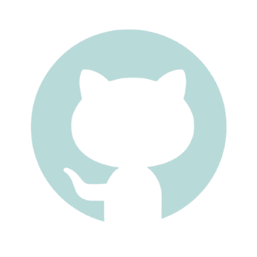
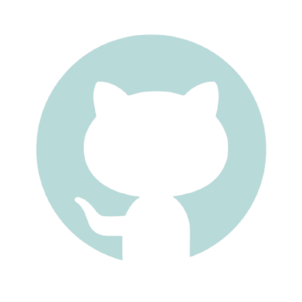

Challenge Amigo Secreto Alura
Este projeto foi proposto como parte do desafio de programação da Alura, onde os alunos candidatos ao programa Oracle One foram dados a tarefa de programar a parte de lógica do front-end de um site de amigo secreto.
 Confira o projeto
Confira o projeto